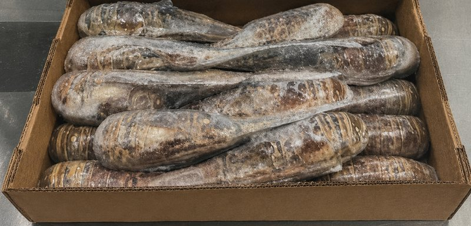
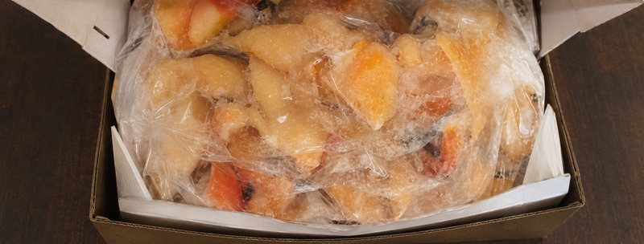

Frozen Spiny Lobster Tails
Panulirus argus
Lobster tails, individually bagged and packed into cartons at the cooperative's facility.
Enquire about this productWhat NATFISH brings to market, and the cooperative functions that carry a member's catch from the water to a buyer.
Availability changes with the season and the fishery. View Belize's standard seafood seasons before making an enquiry.
Four spiny lobster preparations, queen conch and lionfish fillet. Specifications and current availability are confirmed directly with NATFISH.

Panulirus argus
Lobster tails, individually bagged and packed into cartons at the cooperative's facility.
Enquire about this productPanulirus argus
Head meat recovered during lobster processing and frozen for market.
Enquire about this product
Panulirus argus
Whole spiny lobster, frozen raw rather than tailed.
Enquire about this productPanulirus argus
Whole spiny lobster, cooked before freezing.
Enquire about this product
Strombus gigas
Queen conch meat, cleaned to 85% and frozen for market.
Enquire about this productPterois volitans
Fillet from an invasive Indo-Pacific species that Belizean fishers help keep in check on the reef.
Enquire about this productProduct availability follows Belize’s regulated seasons and current supply. Contact NATFISH to discuss current availability, specifications and buyer requirements.
Packaging photography on this page was recreated from NATFISH product material. It illustrates presentation and format only.
NATFISH exists to serve the 636 fishers who own it: teaching fishery management, buying what they land, and marketing it on their behalf.
The Society supports its members with education in fishery management, so that the fishery they depend on keeps producing.
NATFISH purchases the produce its members land, giving a fisher a reliable route for the day's catch.
The Society markets that produce collectively and works to secure the best possible value in international markets.
Send the product, quantity, location and timeframe you are working to, and the team will come back to you on availability.